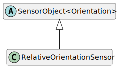

Class RelativeOrientationSensor
Hierarchy-Diagram
{kind=link}
Legend
 class
class
 abstract class
abstract class
Hierarchy
- SensorObject<Orientation>
- RelativeOrientationSensor
Index
Constructors
Properties
Accessors
Methods
Constructors
constructor
- new
Relative Orientation Sensor(uid?, value?, frequency?, displayName?): RelativeOrientationSensor -
Parameters
-
Optionaluid: string -
Optionalvalue: Orientation -
Optionalfrequency: number -
OptionaldisplayName: string
Returns RelativeOrientationSensor
-
Properties
Optional calibration
Sensor calibration data
created
Created timestamp
display
Object display name
frequency
Frequency of the sensor
parentUID
uid
Object identifier
Returns
Unique object identifier
value
Value of the sensor
Accessors
position
- get position(): AbsolutePosition
-
Get the current absolute position of the object relative to the global reference space
Returns AbsolutePosition
Absolute position of data object
- set position(position): void
-
Set the current absolute position of the object relative to the global reference space
Parameters
-
position: AbsolutePosition
Returns void
-
raw
- get raw(): T
-
Raw value before calibration
Returns T
raw sensor value
- set raw(value): void
-
Parameters
-
value: T
Returns void
-
relative
- get relativePositions(): RelativePosition<any, Unit>[]
-
Get relative positions
Returns RelativePosition<any, Unit>[]
Array of relative positions
- set relativePositions(relativePostions): void
-
Parameters
-
relativePostions: RelativePosition<any, Unit>[]
Returns void
-
timestamp
- get timestamp(): number
-
Get the sensor timestamp
Returns number
timestamp
Methods
add
- add
Relative Position(relativePosition): RelativeOrientationSensor -
Add a relative position to this data object
Parameters
-
relativePosition: RelativePosition<any, Unit>
Relative position to add
Returns RelativeOrientationSensor
Data object instance
-
bind
- bind(service): DataObjectBinding<RelativeOrientationSensor>
-
Bind the data object to a service
Parameters
-
service: DataService<string, RelativeOrientationSensor>
Service to bind it to
Returns DataObjectBinding<RelativeOrientationSensor>
Data object binding with a service
-
clone
- clone<T>(dataType?): T
-
Clone the data object
Type Parameters
-
T extends RelativeOrientationSensor
Parameters
-
OptionaldataType: Constructor<T>Data type to clone to
Returns T
Cloned data object
-
get
- get
Position(referenceSpace?): AbsolutePosition -
Get the current absolute position of the object
Parameters
-
OptionalreferenceSpace: TransformationSpaceReference space to transform it to
Returns AbsolutePosition
Position of the data object
-
get
- get
Relative Position(referenceObjectUID, type?): RelativePosition<any, Unit> -
Get relative position of a specified object
Parameters
-
referenceObjectUID: string
Reference object identifier
-
Optionaltype: stringConstructor type of the relative position
Returns RelativePosition<any, Unit>
Relative position to reference object
-
get
- get
Relative Positions(referenceObjectUID?): RelativePosition<any, Unit>[] -
Get relative positions for a different target
Parameters
-
OptionalreferenceObjectUID: stringReference object identifier
Returns RelativePosition<any, Unit>[]
Array of relative positions for the reference object
-
has
remove
set
- set
Parent(object): RelativeOrientationSensor -
Set a parent object to the data object
Parameters
-
object: string | DataObject
Data object or UID to add as parent
Returns RelativeOrientationSensor
instance
-
set
- set
Position(position, referenceSpace?): RelativeOrientationSensor -
Set the current absolute position of the object
Parameters
-
position: AbsolutePosition
Position to set
-
OptionalreferenceSpace: TransformationSpaceReference space
Returns RelativeOrientationSensor
Data object instance
-
setUID
- setUID(uid): RelativeOrientationSensor
-
Set the unique identifier of this object
Parameters
-
uid: string
Unique Identifier
Returns RelativeOrientationSensor
Data object instance
-
The relative orientation sensor describes the device's physical orientation without regard to the Earth's reference coordinate system.